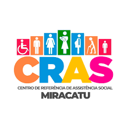
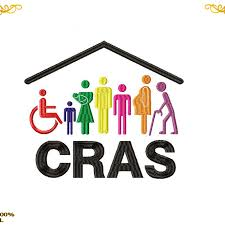

O que é o CRAS?
O Centro de Referência da Assistência Social é a porta de entrada para a política de assistência social, promovendo o acesso aos direitos e fortalecendo vínculos familiares e comunitários.
Serviços oferecidos pelo CRAS
- Atendimento e acompanhamento de famílias em situação de vulnerabilidade.
- Encaminhamento para benefícios socioassistenciais (como o Bolsa Família e BPC).
- Oficinas e grupos de convivência.
- Orientações sobre direitos e acesso a políticas públicas.
Objetivos do CRAS
O CRAS busca fortalecer os vínculos familiares, prevenir situações de risco e garantir o acesso à cidadania.
- Prevenção de vulnerabilidades sociais.
- Promoção da inclusão e proteção social.
- Articulação com a rede de serviços públicos locais.
Quem pode ser atendido
O CRAS atende pessoas e famílias em situação de vulnerabilidade social, tais como:
- Famílias com baixa renda ou em situação de pobreza/extrema pobreza.
- Beneficiários do Bolsa Família e outros programas de transferência de renda.
- Crianças, adolescentes, mulheres, idosos e pessoas com deficiência em situação de risco social.
- Famílias com membros em cumprimento de medidas socioeducativas em meio aberto.
- Pessoas em situação de desemprego, violação de direitos ou sem acesso a serviços básicos.

